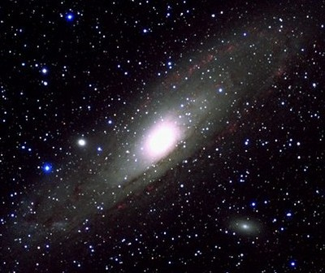
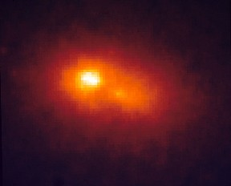
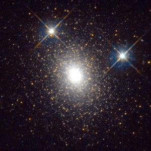

The Andromeda galaxy (also known as Messier 31, M31 or NGC 224), a spiral, is the largest member of the Local Group of galaxies and along with the Milky Way, both dominate the Local Group. It is the nearest large spiral to the Milky Way. It has an apparent magnitude of V = 3.6 (making it a naked eye object), an absolute magnitude of MV = -20.6 and is inclined at 12.5 degrees to our line-of-sight. The galaxy has a total mass of 5 × 1011 solar masses, and a HI mass of 4 × 109 solar masses.

Credit: © Mike Bessell, MSSSO
Let’s now review some properties of M31:
Morphology: Sandage and Tammann, in the Revised Shapley Ames catalog, assign M31 a (revised Hubble classification) type of Sb.
Location: Expectedly, the Andromeda galaxy is in the northern constellation of Andromeda. The galaxy is located at 00h 42m 44.3s +41d 16m 09s (J2000.0) and can be observed from latitudes of +90 to about -40 degrees.
Velocity: M31 has a galactocentric velocity of -120 km/s (and hence is one of a few galaxies that are approaching the Milky Way). Assuming a current distance of 750 kpc and this constant velocity, in just over 2 billion years M31 and the Milky Way will merge.
Satellites: The most well-known satellites or companions to M31 are Messier 32 and Messier 110 (also known as NGC 205). These are usually visible in most published images of M31, with the more compact appearing M32 located 22 arc minutes south of the nucleus of M31, and NGC 205 about 35 arc minutes north-west of M31.
Double nucleus: One of the more interesting recent discoveries of M31 concerns the nature of its nucleus. HST images showed a “double nucleus” with two stellar concentrations and one slightly brighter than the other. However HST determined that it is the dimmer “nucleus” that is the true centroid of the stellar distribution with the brighter “nucleus” off-centre with respect to the outer isophotes of the galaxy. It is possible that the brighter concentration is either a remnant of a galaxy recently cannibalized by M31 or a captured star cluster. Recent studies have also modelled the photometric and kinematical properties of the nucleus with a 1.5 × 107 solar mass eccentric disk (that explains the two stellar “peaks”) with a supermassive black hole of 6 × 107 solar masses centred on the fainter of the two stellar concentrations.

Credit: T. R. Lauer (KPNO/NOAO) et al., HST
Globular cluster system: Messier 31 has an abundant globular cluster system, similar to the Milky Way. The most luminous globular cluster in M31 is Mayall II (also known as G1), which is also the most luminous in all Local Group galaxies. Observations of stellar velocities in Mayall II by HST suggest that a 20,000 solar mass black hole may exist in its centre.

Credit: Rich M., Mighell K., Neill J.D. (Columbia University), Freedman W. (Carnegie Observatories) and NASA
S Andromedae: The first supernova ever detected outside our Milky Way (but not then known as an exploding star) was observed in M31 in 1885 and designated S Andromedae. It was discovered by Ernst Hartwig and reached an apparent magnitude of 6.
Cepheid variables: On 1st January 1925 at a joint meeting of the American Astronomical Society and the American Association for the Advancement of Science, Henry Norris Russell formally made the announcement that Edwin Hubble had discovered Cepheid variable stars in M31 (and the nearby spiral M33). Using the Cepheid period-luminosity relation of the time implied that the two galaxies were about 1 million light years away from the Milky Way. From this moment the “spiral nebulae” that some had considered part of the Milky Way became distant galaxies in their own right.